Costa Blanca · Santa Pola
Property for sale in Santa Pola
New apartments a short walk from the beach and the port, and houses with views in Gran Alacant, 15 minutes from Alicante airport. Here are the properties we sell in Santa Pola today, with a short guide to the areas and what buying really costs.
- 15properties for sale in Santa Pola
- from €205,000for a new apartment
- about 15 minto Alicante-Elche airport
- Tabarcaan island a short boat trip away
For sale now
Properties for sale in Santa Pola
New apartments and penthouses with 1 to 3 bedrooms, most of them within a kilometre of the beach, and terraced houses, bungalows and villas in Gran Alacant. Prices are as listed today; ask us for the current availability.
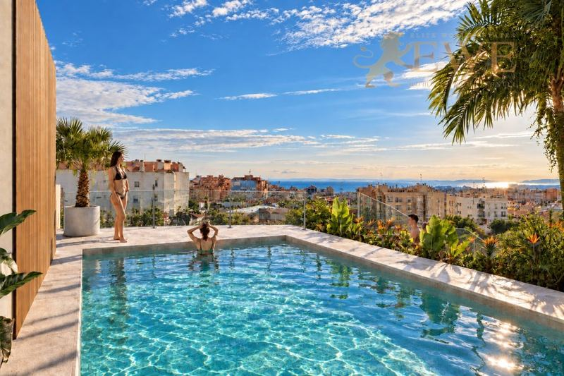
EWE3902Santa Pola
Modern apartments 800 m from the beach and port in Santa Pola
€205,000
1 bedroom · 1 bathroomRef. EWE3902
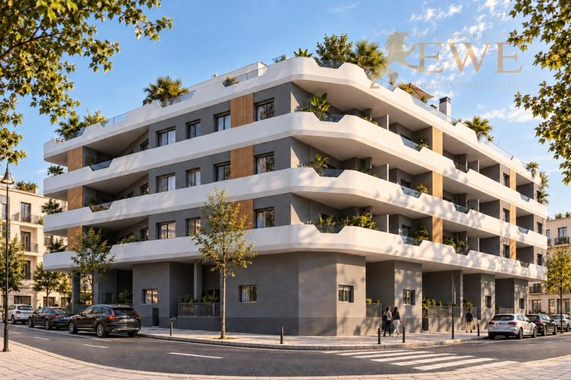
EWE3904Santa Pola
Excellent apartments 800 m from the beach and port in Santa Pola
€235,000
2 bedrooms · 1 bathroomRef. EWE3904
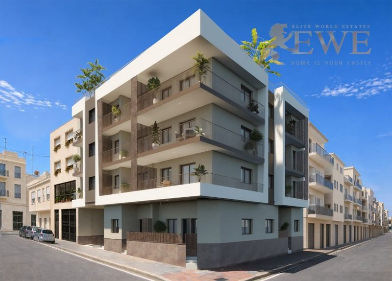
EWE3822Santa Pola
New Apartments 300 m from the Beach and Marina in the Heart of Santa Pola
€248,000
2 bedrooms · 2 bathrooms · 70.05 m²Ref. EWE3822
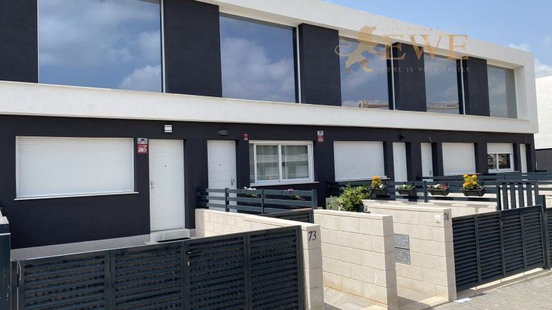
EWE3588Santa Pola
Modern terraced house in Gran Alacant
€289,000
3 bedrooms · 2 bathrooms · 110 m²Ref. EWE3588
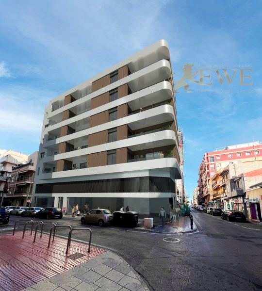
EWE3489Santa Pola
Modern apartment 500 m from the beach in the centre of Santa Pola
€292,015
2 bedrooms · 2 bathrooms · 71.7 m²Ref. EWE3489
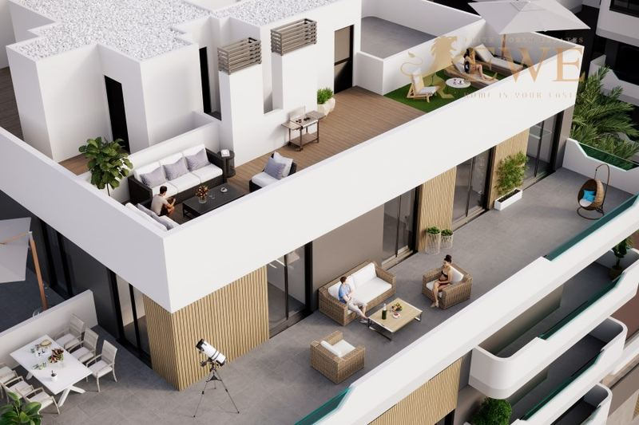
EWE3309Santa Pola
Excellent flat in the centre of Santa Pola
€298,000
2 bedrooms · 2 bathrooms · 62 m²Ref. EWE3309
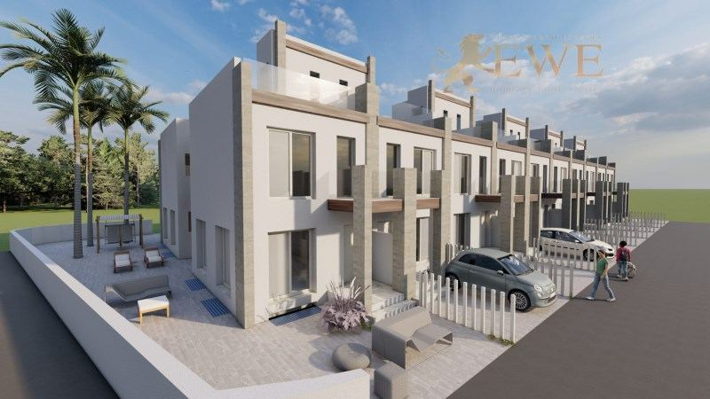
EWE2320Santa Pola
Super comfortable semi-detached house near the beach in Gran Alacant
€306,000
2 bedrooms · 2 bathroomsRef. EWE2320
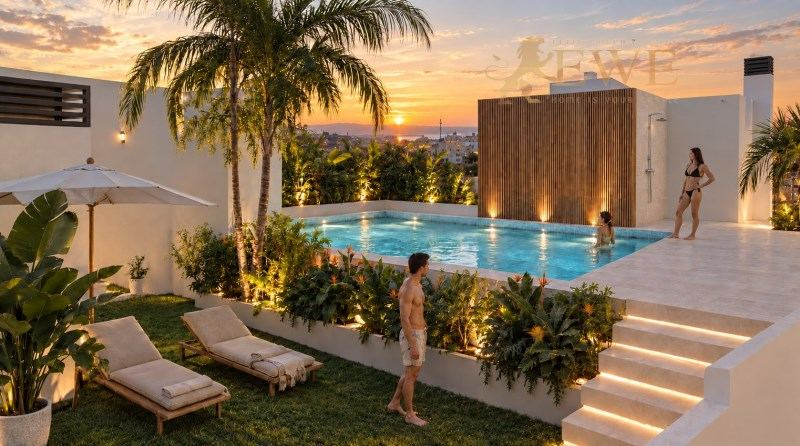
EWE3903Santa Pola
New apartments with a rooftop pool near the beach in Santa Pola
€315,000
3 bedrooms · 2 bathroomsRef. EWE3903
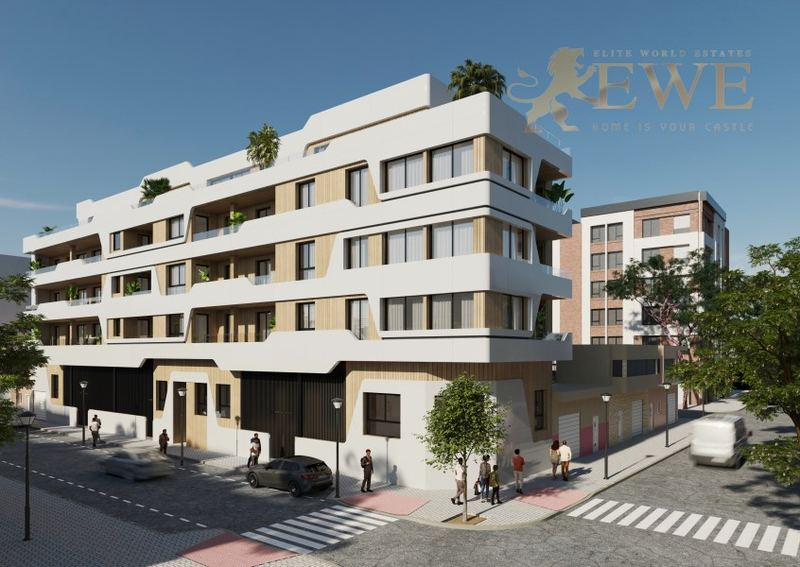
EWE3834Santa Pola
New Penthouse for Sale 900 m from the Beach in Santa Pola
€325,000
2 bedrooms · 2 bathrooms · 63 m²Ref. EWE3834
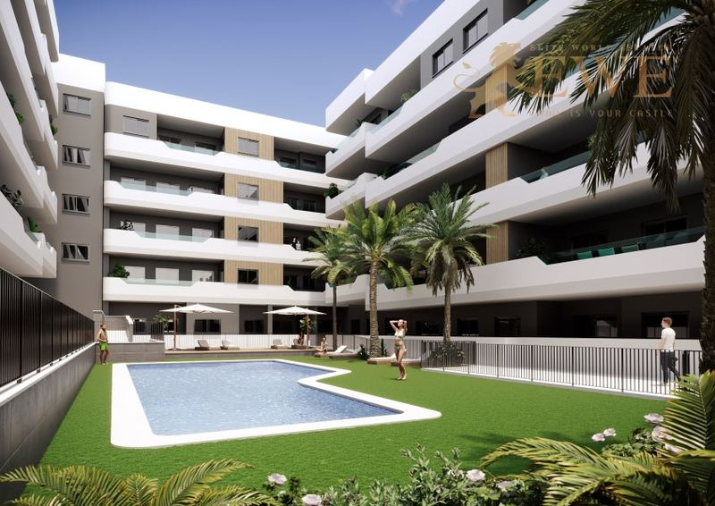
EWE3310Santa Pola
Modern apartment in the centre of Santa Pola
€330,000
2 bedrooms · 2 bathroomsRef. EWE3310
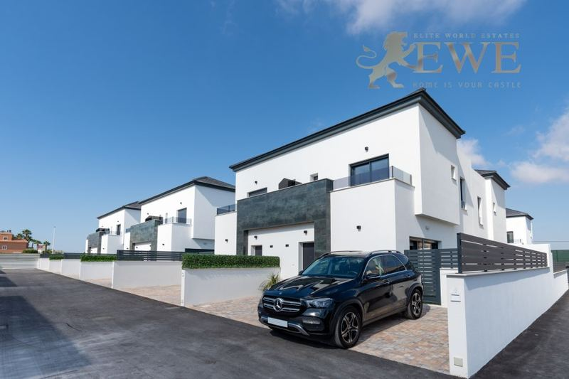
EWE1725Santa Pola
A picturesque bungalow in Gran Alacant
€350,000
3 bedrooms · 3 bathrooms · 88 m²Ref. EWE1725
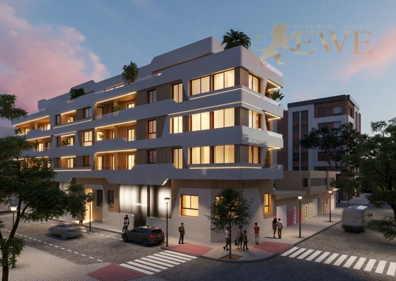
EWE3833Santa Pola
New Apartments for Sale 900 m from the Beach in Santa Pola
€380,000
3 bedrooms · 2 bathrooms · 83.4 m²Ref. EWE3833
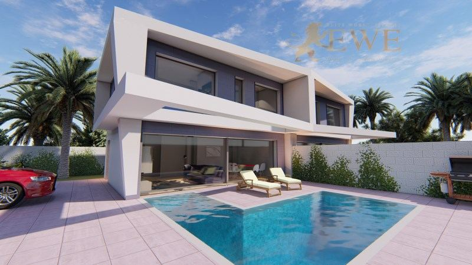
EWE1830Santa Pola
Semi-detached villa in Gran Alacante, Santa Pola
€435,000
4 bedrooms · 3 bathroomsRef. EWE1830
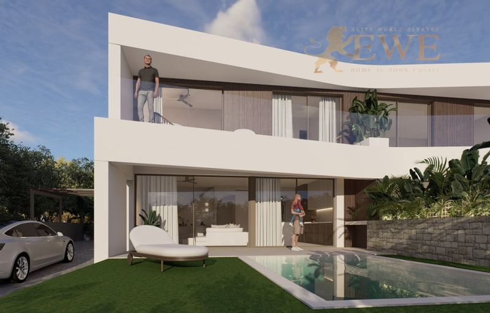
EWE3587Santa Pola
Modern villa for sale in Gran Alacant
€570,000
3 bedrooms · 2 bathrooms · 130 m²Ref. EWE3587
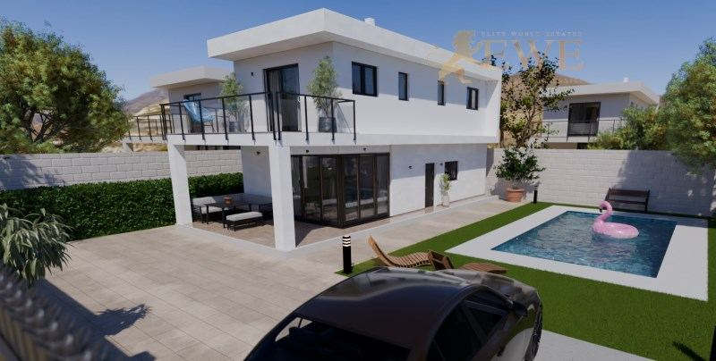
EWE1860Santa Pola
Modern design house in Gran Alacant
€792,000
4 bedrooms · 3 bathrooms · 199 m²Ref. EWE1860
The city
Living in Santa Pola
Santa Pola is a seaside town of about 38,000 people just south of Alicante. It has one of the largest fishing fleets on the coast, a busy port with fish restaurants, and long sandy beaches along the bay.
Behind the town lies the Salinas de Santa Pola natural park, a wide area of salt pans where flamingos live for much of the year. Boats leave from the port for the small island of Tabarca, a marine reserve with clear water. On the cape above the town, Gran Alacant is a large residential area with views over the sea.
Life goes on all year here, with shops, markets and services in the centre. Alicante-Elche airport is only about 15 minutes away by car, and Alicante city about 25 minutes.
Where to buy
The main areas of Santa Pola
Centre and port
The port, the fish market and the old centre, with shops and restaurants on foot. Apartments close to the beach.
Playa de Levante
The long sandy beach east of the port, with a promenade. Apartments and penthouses near the sea.
Gran Alacant
A large residential area on the cape above Santa Pola, with views over the sea. Terraced houses, bungalows and villas.
Santa Pola del Este
A quieter area on the cape, with coves and houses close to the sea.
Budget
What it costs to buy in Santa Pola
On top of the price you pay tax and fees. For a new home at €292,015, for example, that is €29,202 VAT and €4,088 stamp duty, plus notary, land registry and legal fees. Taxes on resale homes are different, so always ask us for the exact figure for the home you like.
| New build | 10% VAT (IVA) + 1.4% stamp duty (AJD) |
|---|---|
| Resale home | 9% transfer tax (ITP), 11% above €1 million |
| Notary, registry, lawyer | about 1.5–2.5% of the price |
| Every year | IBI property tax and community fees, which depend on the home |
Questions
Buying property in Santa Pola: questions and answers
How much does an apartment cost in Santa Pola?
Our new apartments in Santa Pola start at €205,000 today, and most with 2 or 3 bedrooms cost between €235,000 and €380,000. Houses in Gran Alacant cost from about €289,000 for a terraced house to €792,000 for a modern villa.
Is Santa Pola close to the airport?
Yes, it is one of the closest beach towns to Alicante-Elche airport, about 15 minutes by car. That makes it practical for short trips and for renting out.
What is Gran Alacant?
Gran Alacant is a residential area on the cape above Santa Pola, with houses and apartments, shops and restaurants, and views over the sea and the salt pans. It is about 10 minutes from Santa Pola and the airport.
What costs are there on top of the price?
In the Valencian Community you pay 10% VAT and 1.4% stamp duty on a new build, and 9% transfer tax (11% above €1 million) on a resale home. Notary, land registry and legal fees add about 1.5–2.5%.
Can foreigners buy property in Santa Pola?
Yes. Anyone can buy property in Spain. You need a Spanish NIE tax number and usually a Spanish bank account, and we help you with both. See our guide to the NIE number.


Looking for a home in Santa Pola?
Tell us your budget and what you need. We reply within one working day, in English, German, Spanish or Polish.